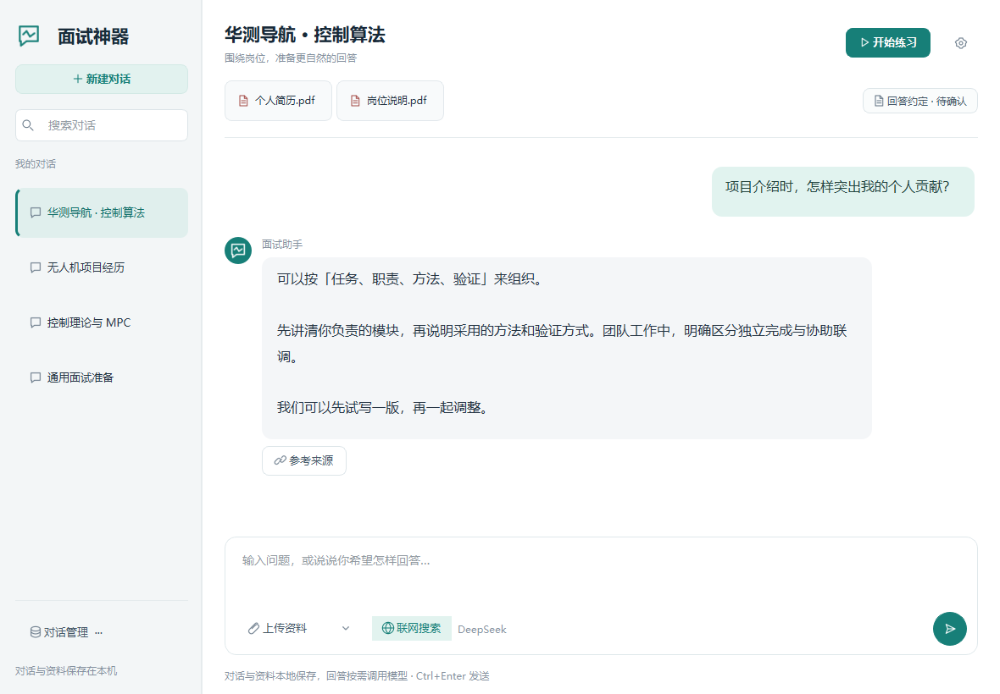
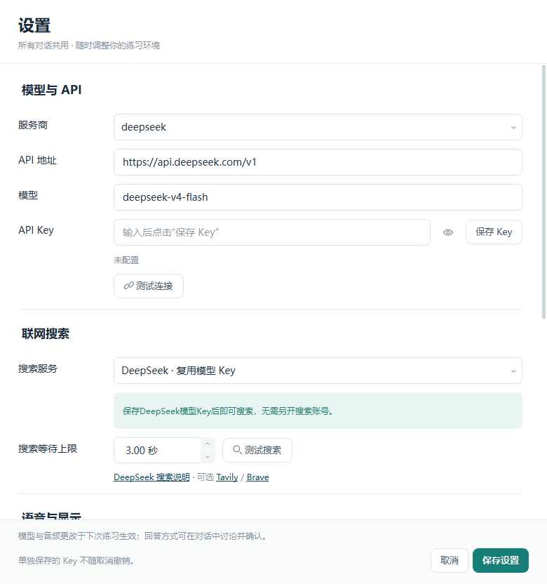

更清楚的项目边界
哪些独立完成，哪些协助参与；采用的方法、遇到的问题与验证依据，都能通过交流逐步补充。
例如：路径规划由我负责，系统联调为协助参与。
补充真实经历，确认你的回答风格。
支持屏幕共享保护，让辅助信息留在自己的视野里。
当前提供 Windows 电脑版，请在电脑上下载安装。
v0.7.0 · Windows 10 / 11，64 位 · 约 213 MiB

01 / SCREEN SHARING PROTECTION
支持 Windows 屏幕共享保护。
开始使用前，请核对远端收到的实际画面。
项目目标与应用场景
算法设计与验证方法
先讲清个人职责，再说明采用的方法与验证过程。
独立完成与协助工作，分别表达。项目目标与应用场景
算法设计与验证方法
先讲清个人职责，再说明采用的方法与验证过程。
独立完成与协助工作，分别表达。当前为保护开启的概念示意，可切换开关查看区别。
此处用绘制画面解释功能，不作为会议软件兼容性证据。实际效果与 Windows 版本、会议软件及共享方式有关，使用前请在远端验证；双端实测视频暂未提供。
02 / PREPARE THROUGH CONVERSATION
简历给出起点，交流补上细节。
补充职责、纠正理解，再确认表达偏好。
以下为预设演示，不调用模型，不上传资料，也不计入你的真实聊天记录。
先梳理个人职责，避免把团队成果全部归到自己名下。
“磨合”指通过对话补充背景、确认回答约定与示范，让后续参考回答沿用这些信息；不涉及模型参数训练。
MAKE YOUR PREPARATION TANGIBLE
在对话中整理、核对和修改，
让你的准备过程有迹可循。
哪些独立完成，哪些协助参与；采用的方法、遇到的问题与验证依据，都能通过交流逐步补充。
在聊天中确认回答的重点、结构、长度和语气，并查看当前对话的回答约定。
回看对话和练习问答，指出不准确的地方，再补充和修正，为下一轮练习留下依据。
这里展示的是准备方式与演示内容。个人事实请自行核对；目前通过现有聊天记录、回答约定和问答历史回看，并非新增的自动成果面板。
A CALMER WORKSPACE
资料、聊天、回答约定与参考来源集中在一起。准备过程可以不断补充，不必每次从头解释。
左侧切换对话
按公司、岗位或主题整理
底部输入与上传
像平常聊天一样补充信息

截图中的对话与文件均为演示内容，不包含个人简历或真实 API Key。
START WITH A CONVERSATION
下载安装后配置自己的模型，
再把资料和问题交给当前对话。
在 Windows 电脑上安装轻量版，首次使用时在软件内一键准备语音模型；手机用户可复制官网链接。
在右上角设置中填写服务地址、模型与 API Key，测试连接。
上传资料后继续交流，补充个人职责，纠正理解，确认表达偏好。
检查模型和声音来源，测试共享保护，再开始练习与回看。
YOUR NEXT INTERVIEW STARTS HERE
下载面试神器，在一次对话里开始梳理你的经历。
查看版本说明与校验文件 · 下载离线完整版（约 1.10 GiB） · 当前无手机版安装包
升级提示：请先完全退出旧版，再按照安装向导覆盖安装。模型服务可能产生 API 用量费用。
A FEW THINGS TO KNOW
先弄清楚工具怎样工作，
再让它融入你的准备过程。
软件使用 Windows 窗口捕获保护能力，效果取决于系统、会议软件和共享方式。请在开始前用远端画面验证，不能保证所有场景都不可见。上方示意用于解释功能，尚未提供双端实测视频。
这里指补充对话背景、确认回答约定和示范，让后续参考回答使用这些信息，不涉及模型参数训练。你可以随时纠正或补充，个人事实应由你核对。
需要。应用通过你配置的模型服务生成参考回答。请在软件设置中填写自己的 Key，相关 API 费用由对应服务商计收。安装包不包含开发者或其他用户的 Key。
安装包包含中文 Paraformer、Whisper 备用语音识别模型与 OCR 组件，供本机运行。使用模型生成回答和联网搜索仍需要网络连接。
软件在本机保存对话与资料文字。生成回答时，会按需将相关问题、资料和上下文发送给你配置的模型服务；开启搜索时会向搜索服务发送公开查询。语音识别和扫描 PDF 的 OCR 在本机执行。
当前提供 Windows 64 位安装包。手机和 Mac 可以浏览官网；运行应用需要使用兼容的 Windows 电脑。其他平台暂未提供安装版本。
AI 内容用于准备与练习。请核对个人职责、专业细节和事实依据，结合自己的真实经历调整表达，并遵守面试或考试的使用规则。